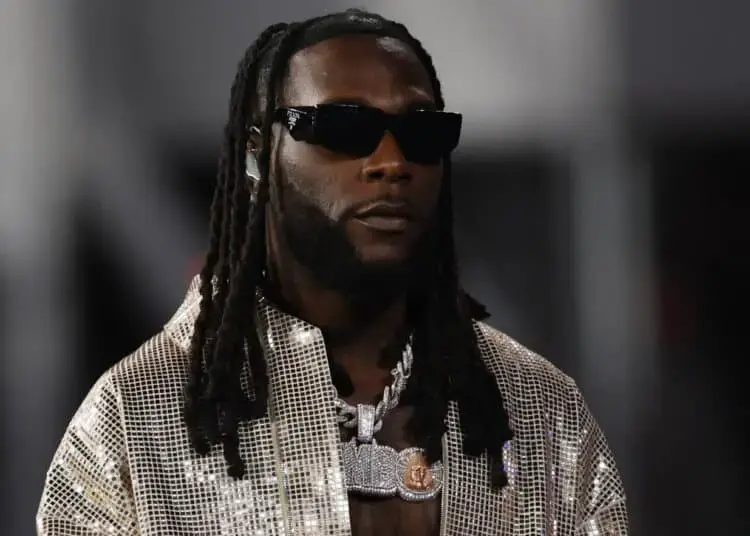

Damini Ebunoluwa Ogulu AKA [BURNA-BOY]
 BURNA BOY:is a Nigerian singer,song writter and producer he's known for popularizing afrobeats and afrofusion globaly.THE LIFE AND RAISE TO FAME OF BURNA BOY
He rose to stardom in 2012 after releasing "Like to Party", the lead single from his debut studio album L.I.F.E (2013). In 2017, Burna Boy signed with Atlantic Records in the United States (and its parent company Warner Music Group internationally) to release his third studio album, Outside (2018).[12]
In 2019, he won Best International Act at the BET Awards, and was named an Apple Music Up Next artist. He also released his fourth studio album, African Giant, which went on to win Album of the Year at the All Africa Music Awards and was nominated for Best World Music Album at the 62nd Annual Grammy Awards.[13][14] He was awarded African Artist of the Year at the 2020 Ghana Music Awards. Burna Boy released his fifth studio album, Twice as Tall, in August 2020. It won Best World Music Album at the 63rd Annual Grammy Awards. He again won Best International Act at the 2021 BET Awards.
Burna Boy's sixth studio album Love, Damini was released in 2022 and became the highest debut of an African album on the Billboard 200 chart. It also became the highest-charting African album in France, the Netherlands and the UK.[17] In October, Burna Boy was awarded the Member of the Order of the Federal Republic plaque for his achievements in music.[4] In 2023, Rolling Stone ranked him number 197 on its list of the 200 greatest singers of all time.[9] Burna Boy won his fourth Best International Act at the BET Awards in 2023.[18] He won The Headies Afrobeats Single of the Year category and also the Song of the Year for "Last Last".